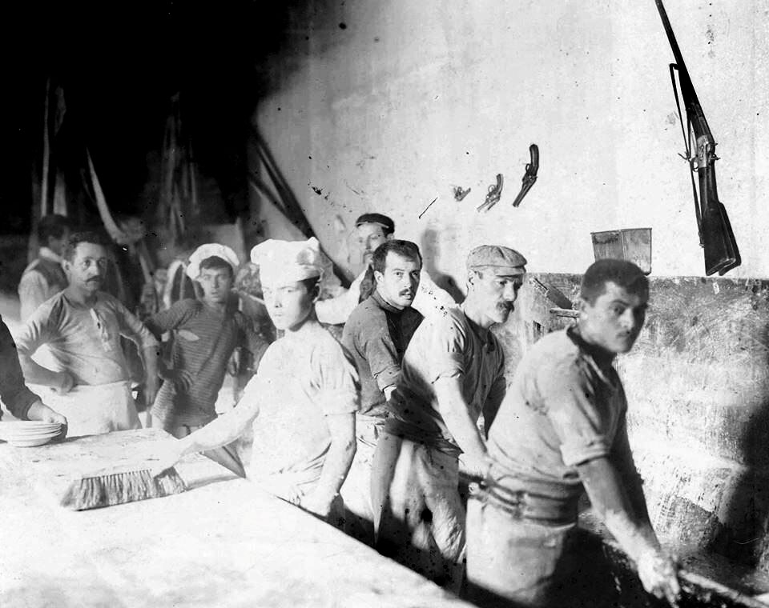
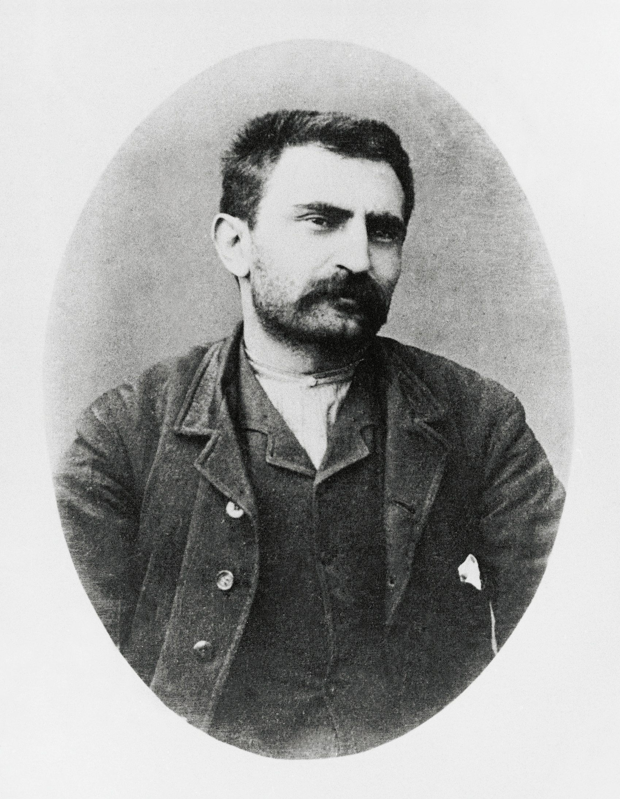
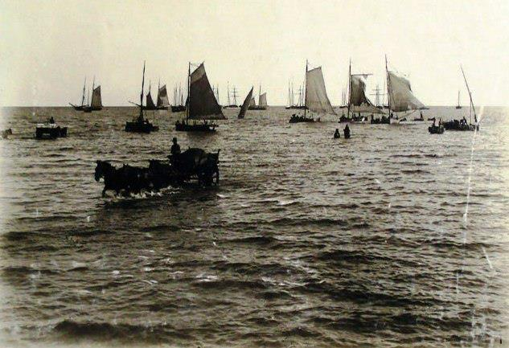
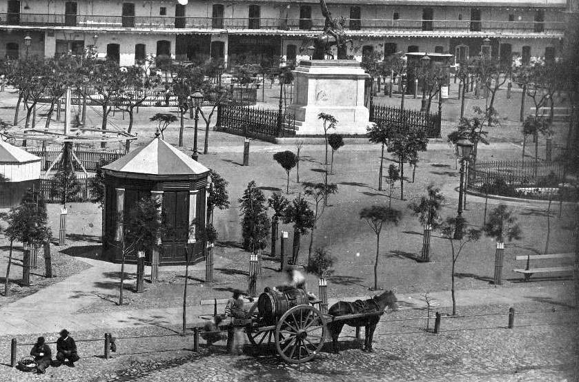
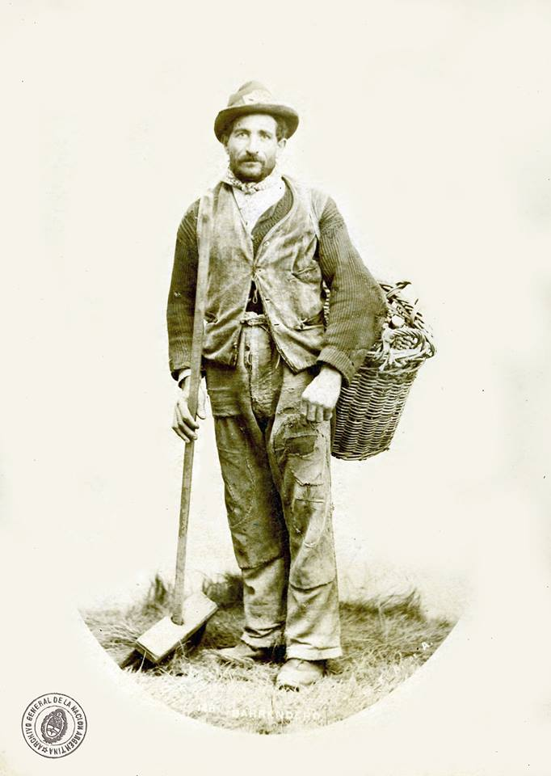
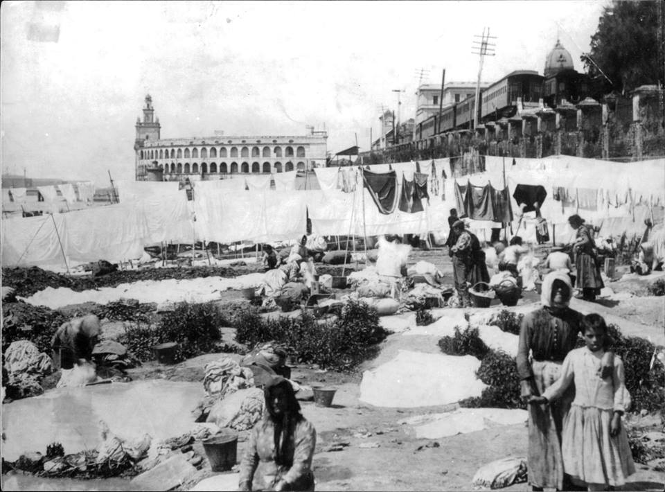
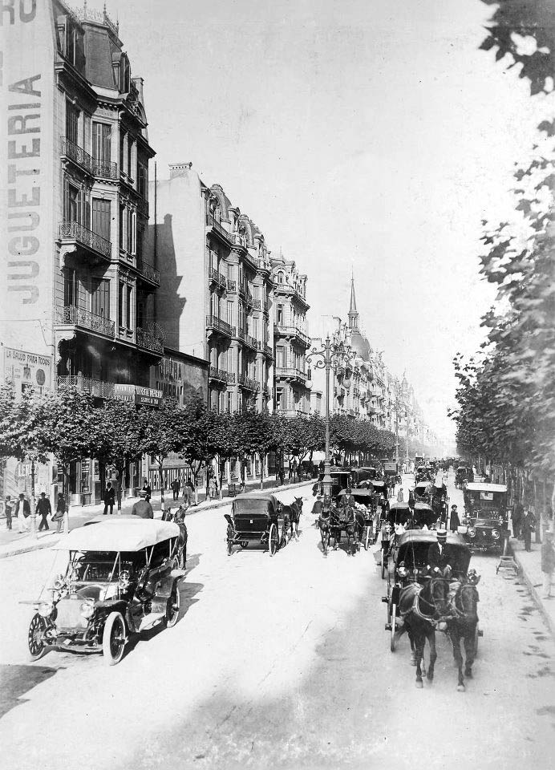
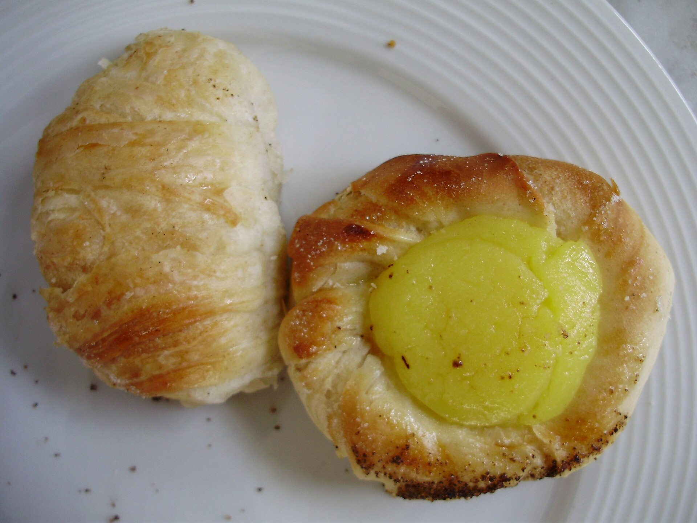
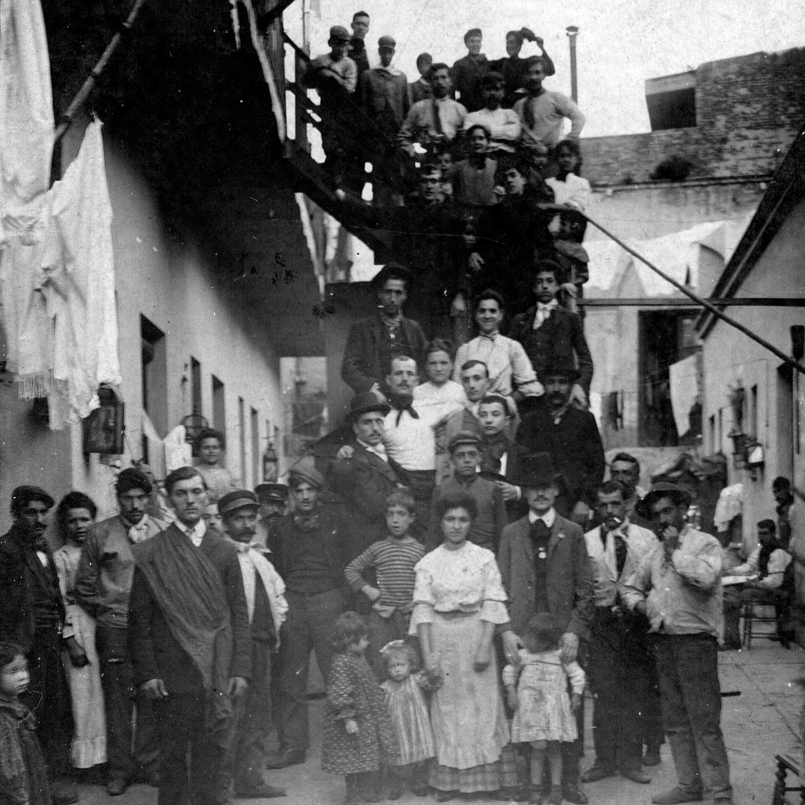

Vigilantes
Así se llamaba a los policías de la época. Una masa alargada y rígida, como un agente en guardia.

Trabajaban escondidos en sótanos mientras la ciudad dormía. Un día dejaron a Buenos Aires sin pan, y le cambiaron el nombre a las facturas para siempre.
Descubrí la historiaLa Sociedad Cosmopolita de Resistencia y Colocación de Obreros Panaderos, el primer sindicato de panaderos del país, fundado por inmigrantes anarquistas como el italiano Errico Malatesta, inició una huelga sorpresiva que paralizó el suministro de pan en la ciudad durante más de diez días.
Durante la huelga y en los años posteriores, como forma de protesta pacífica, burla y propaganda, los obreros rebautizaron los nombres de los panes y bizcochos (conocidos en Argentina como “facturas”) con términos que ironizaban a sus principales enemigos políticos: la policía, la Iglesia y el Ejército.

A fines del siglo XIX llegaban al puerto miles de trabajadores europeos. Muchos traían consigo las ideas anarquistas y socialistas que darían forma a los primeros sindicatos del país.




Obreros panaderos, liderados por militantes de corrientes anarquistas y socialistas.
Los dueños de las panaderías, la policía local y el gobierno argentino.
Los panaderos vivían en condiciones de explotación extrema. El trabajo era obligatoriamente nocturno, realizado en sótanos cerrados, oscuros, sin ventilación y con temperaturas sofocantes.
Además, gran parte de su pago no era en dinero, sino en vales, comida de mala calidad o el derecho a dormir sobre las mismas bolsas de harina en el suelo del sótano.

Eliminación de la modalidad de “cama y comida” como forma de pago.
Y el establecimiento de un día de descanso.
Los panaderos convirtieron su oficio en propaganda. Cada vez que alguien pedía una docena de facturas, sin saberlo, se reía de la policía, de la Iglesia y del Ejército. Los nombres nacidos de esa protesta se usan hasta hoy en cualquier panadería argentina.

Así se llamaba a los policías de la época. Una masa alargada y rígida, como un agente en guardia.
Una burla directa a los religiosos, uno de los blancos predilectos de los anarquistas.
Rellenos y con forma de tubo, en alusión a las armas del Ejército.
Un guiño a la propaganda anarquista de la época, servido en cada mesa.
Al paralizar un alimento de primera necesidad, el sindicato obligó a los empleadores a ceder, separando por fin el espacio de trabajo de la vida personal.

La resistencia laboral se infiltró en la cultura popular.
Este acontecimiento demostró que los sectores más precarizados e invisibilizados, que literalmente trabajaban escondidos en sótanos mientras la ciudad dormía, podían doblegar a los empleadores mediante la organización sindical y la paralización de un servicio vital.
Es un ejemplo histórico único de cómo la gastronomía cotidiana se transformó en un acto de memoria y protesta persistente.